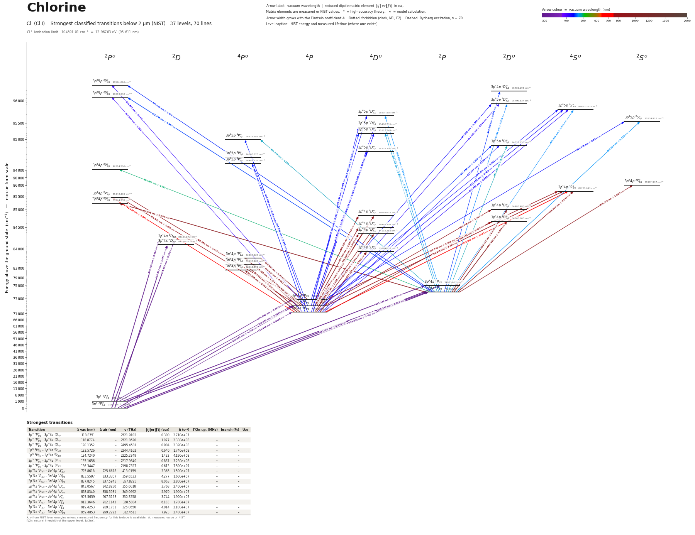

Chlorine energy level diagram
Energy levels and transitions of neutral chlorine (Cl I): the 70 strongest classified lines below 2 µm from the NIST Atomic Spectra Database and the 37 levels they connect, each line with its vacuum wavelength, frequency and, for 70 of them, the reduced dipole matrix element derived from the NIST transition rate. Lifetimes, hyperfine constants and isotope shifts from the literature have not been compiled for this element yet.
Hover a line or a level to isolate it, click to keep it selected. Scroll to zoom, drag to move.

Download: diagram (PDF) diagram (SVG) transitions (CSV) levels (CSV) source code

Strongest transitions of chlorine
| Transition | λ vac (nm) | λ air (nm) | ν (THz) | |⟨J‖er‖J′⟩| (ea₀) | A (s⁻¹) | Γ/2π up. (MHz) | branch (%) | Use |
|---|---|---|---|---|---|---|---|---|
| 3p5 2P°3/2 – 3p44s 2D3/2 | 118.8751 | – | 2521.9103 | 0.300 | 2.710e+07 | – | – | |
| 3p5 2P°3/2 – 3p44s 2D5/2 | 118.8774 | – | 2521.8620 | 1.077 | 2.330e+08 | – | – | |
| 3p5 2P°1/2 – 3p44s 2D3/2 | 120.1352 | – | 2495.4581 | 0.904 | 2.390e+08 | – | – | |
| 3p5 2P°3/2 – 3p44s 2P1/2 | 133.5726 | – | 2244.4162 | 0.640 | 1.740e+08 | – | – | |
| 3p5 2P°3/2 – 3p44s 2P3/2 | 134.7240 | – | 2225.2349 | 1.422 | 4.190e+08 | – | – | |
| 3p5 2P°1/2 – 3p44s 2P1/2 | 135.1656 | – | 2217.9640 | 0.887 | 3.230e+08 | – | – | |
| 3p5 2P°1/2 – 3p44s 2P3/2 | 136.3447 | – | 2198.7827 | 0.613 | 7.500e+07 | – | – | |
| 3p44s 4P5/2 – 3p44p 4S°3/2 | 725.8618 | 725.6618 | 413.0159 | 3.365 | 1.500e+07 | – | – | |
| 3p44s 4P3/2 – 3p44p 4D°3/2 | 833.5597 | 833.3307 | 359.6533 | 4.277 | 1.600e+07 | – | – | |
| 3p44s 4P5/2 – 3p44p 4D°7/2 | 837.8245 | 837.5943 | 357.8225 | 8.063 | 2.800e+07 | – | – | |
| 3p44s 4P1/2 – 3p44p 4D°1/2 | 843.0567 | 842.8250 | 355.6018 | 3.768 | 2.400e+07 | – | – | |
| 3p44s 4P3/2 – 3p44p 4D°5/2 | 858.8340 | 858.5981 | 349.0692 | 5.970 | 1.900e+07 | – | – | |
| 3p44s 2P3/2 – 3p44p 2P°1/2 | 907.5659 | 907.3168 | 330.3258 | 3.744 | 1.900e+07 | – | – | |
| 3p44s 4P5/2 – 3p44p 4P°5/2 | 912.3646 | 912.1143 | 328.5884 | 6.183 | 1.700e+07 | – | – | |
| 3p44s 4P3/2 – 3p44p 4P°1/2 | 919.4253 | 919.1731 | 326.0650 | 4.014 | 2.100e+07 | – | – | |
| 3p44s 2P3/2 – 3p44p 2D°5/2 | 959.4853 | 959.2222 | 312.4513 | 7.923 | 2.400e+07 | – | – |
λ, ν from NIST level energies unless a measured frequency for this isotope is available. A: measured value or NIST. Γ/2π: natural linewidth of the upper level, 1/(2πτ).
Listed Cl transitions below 2 µm
| Lower level | Upper level | λ vacuum (nm) | λ air (nm) | ν (THz) | Type | |⟨J‖er‖J′⟩| (ea₀) | A (s⁻¹) | Branching (%) | Source of matrix element / A |
|---|---|---|---|---|---|---|---|---|---|
| 3p5 2P°3/2 | 3p44s 2D3/2 | 118.8751 | – | 2521.9103 | E1 | 0.300 NIST | 2.710e+07 NIST | – | NIST ASD (accuracy C) |
| 3p5 2P°3/2 | 3p44s 2D5/2 | 118.8774 | – | 2521.8620 | E1 | 1.077 NIST | 2.330e+08 NIST | – | NIST ASD (accuracy C) |
| 3p5 2P°1/2 | 3p44s 2D3/2 | 120.1352 | – | 2495.4581 | E1 | 0.904 NIST | 2.390e+08 NIST | – | NIST ASD (accuracy C) |
| 3p5 2P°3/2 | 3p44s 2P1/2 | 133.5726 | – | 2244.4162 | E1 | 0.640 NIST | 1.740e+08 NIST | – | NIST ASD (accuracy C) |
| 3p5 2P°3/2 | 3p44s 2P3/2 | 134.7240 | – | 2225.2349 | E1 | 1.422 NIST | 4.190e+08 NIST | – | NIST ASD (accuracy C+) |
| 3p5 2P°1/2 | 3p44s 2P1/2 | 135.1656 | – | 2217.9640 | E1 | 0.887 NIST | 3.230e+08 NIST | – | NIST ASD (accuracy C+) |
| 3p5 2P°1/2 | 3p44s 2P3/2 | 136.3447 | – | 2198.7827 | E1 | 0.613 NIST | 7.500e+07 NIST | – | NIST ASD (accuracy C+) |
| 3p5 2P°3/2 | 3p44s 4P3/2 | 137.9528 | – | 2173.1526 | E1 (intercombination) | 0.239 NIST | 1.100e+07 NIST | – | NIST ASD (accuracy D) |
| 3p5 2P°3/2 | 3p44s 4P5/2 | 138.9693 | – | 2157.2575 | E1 (intercombination) | 0.0428 NIST | 2.300e+05 NIST | – | NIST ASD (accuracy D) |
| 3p5 2P°1/2 | 3p44s 4P1/2 | 138.9957 | – | 2156.8474 | E1 (intercombination) | 0.0671 NIST | 1.700e+06 NIST | – | NIST ASD (accuracy D) |
| 3p5 2P°1/2 | 3p44s 4P3/2 | 139.6527 | – | 2146.7004 | E1 (intercombination) | 0.0898 NIST | 1.500e+06 NIST | – | NIST ASD (accuracy D) |
| 3p44s 4P5/2 | 3p45p 2P°3/2 | 410.5939 | 410.4780 | 730.1435 | E1 (intercombination) | 0.165 NIST | 2.000e+05 NIST | – | NIST ASD (accuracy D) |
| 3p44s 4P3/2 | 3p45p 2P°1/2 | 414.8426 | 414.7256 | 722.6656 | E1 (intercombination) | 0.164 NIST | 3.800e+05 NIST | – | NIST ASD (accuracy D) |
| 3p44s 4P5/2 | 3p45p 2D°3/2 | 421.0851 | 420.9665 | 711.9523 | E1 (intercombination) | 0.246 NIST | 4.100e+05 NIST | – | NIST ASD (accuracy D+) |
| 3p44s 4P5/2 | 3p45p 4S°3/2 | 422.7616 | 422.6426 | 709.1289 | E1 | 0.286 NIST | 5.500e+05 NIST | – | NIST ASD (accuracy D+) |
| 3p44s 4P5/2 | 3p45p 4D°5/2 | 426.5781 | 426.4580 | 702.7845 | E1 | 0.198 NIST | 1.700e+05 NIST | – | NIST ASD (accuracy D+) |
| 3p44s 4P3/2 | 3p45p 4S°3/2 | 432.4551 | 432.3335 | 693.2337 | E1 | 0.419 NIST | 1.100e+06 NIST | – | NIST ASD (accuracy D+) |
| 3p44s 4P3/2 | 3p45p 4D°5/2 | 436.4494 | 436.3268 | 686.8894 | E1 | 0.409 NIST | 6.800e+05 NIST | – | NIST ASD (accuracy D) |
| 3p44s 4P1/2 | 3p45p 2D°3/2 | 437.0726 | 436.9498 | 685.9100 | E1 (intercombination) | 0.340 NIST | 7.000e+05 NIST | – | NIST ASD (accuracy D+) |
| 3p44s 4P5/2 | 3p45p 2D°5/2 | 437.2772 | 437.1544 | 685.5890 | E1 (intercombination) | 0.193 NIST | 1.500e+05 NIST | – | NIST ASD (accuracy D+) |
| 3p44s 4P3/2 | 3p45p 4D°3/2 | 438.1126 | 437.9896 | 684.2817 | E1 | 0.482 NIST | 1.400e+06 NIST | – | NIST ASD (accuracy D) |
| 3p44s 4P1/2 | 3p45p 4S°3/2 | 438.8791 | 438.7558 | 683.0867 | E1 | 0.245 NIST | 3.600e+05 NIST | – | NIST ASD (accuracy D+) |
| 3p44s 4P5/2 | 3p45p 4D°7/2 | 439.0984 | 438.9751 | 682.7455 | E1 | 0.684 NIST | 1.400e+06 NIST | – | NIST ASD (accuracy D) |
| 3p44s 4P1/2 | 3p45p 4D°1/2 | 439.1636 | 439.0403 | 682.6441 | E1 | 0.257 NIST | 7.900e+05 NIST | – | NIST ASD (accuracy D+) |
| 3p44s 4P1/2 | 3p45p 2S°1/2 | 440.3757 | 440.2520 | 680.7653 | E1 (intercombination) | 0.221 NIST | 5.800e+05 NIST | – | NIST ASD (accuracy D+) |
| 3p44s 4P5/2 | 3p45p 4P°3/2 | 440.4257 | 440.3020 | 680.6880 | E1 | 0.353 NIST | 7.400e+05 NIST | – | NIST ASD (accuracy D) |
| 3p44s 4P5/2 | 3p45p 4P°5/2 | 443.9734 | 443.8488 | 675.2487 | E1 | 0.602 NIST | 1.400e+06 NIST | – | NIST ASD (accuracy D) |
| 3p44s 4P1/2 | 3p45p 4D°3/2 | 444.7071 | 444.5823 | 674.1346 | E1 | 0.200 NIST | 2.300e+05 NIST | – | NIST ASD (accuracy D) |
| 3p44s 4P3/2 | 3p45p 4P°1/2 | 444.7387 | 444.6138 | 674.0868 | E1 | 0.196 NIST | 4.400e+05 NIST | – | NIST ASD (accuracy D) |
| 3p44s 2P3/2 | 3p45p 2P°1/2 | 447.0622 | 446.9368 | 670.5833 | E1 | 0.376 NIST | 1.600e+06 NIST | – | NIST ASD (accuracy D) |
| 3p44s 4P3/2 | 3p45p 2D°5/2 | 447.6560 | 447.5304 | 669.6938 | E1 (intercombination) | 0.338 NIST | 4.300e+05 NIST | – | NIST ASD (accuracy D+) |
| 3p44s 2P3/2 | 3p44p 2D°3/2 | 449.2292 | 449.1032 | 667.3486 | E1 | 0.293 NIST | 4.800e+05 NIST | – | NIST ASD (accuracy D+) |
| 3p44s 2P3/2 | 3p45p 2P°3/2 | 452.7451 | 452.6182 | 662.1661 | E1 | 0.967 NIST | 5.100e+06 NIST | – | NIST ASD (accuracy C) |
| 3p44s 2P3/2 | 3p45p 2D°3/2 | 465.5344 | 465.4041 | 643.9748 | E1 | 0.312 NIST | 4.900e+05 NIST | – | NIST ASD (accuracy D+) |
| 3p44s 2P3/2 | 3p45p 4S°3/2 | 467.5845 | 467.4536 | 641.1515 | E1 (intercombination) | 0.201 NIST | 2.000e+05 NIST | – | NIST ASD (accuracy D+) |
| 3p44s 2P3/2 | 3p45p 4D°1/2 | 467.9075 | 467.7765 | 640.7089 | E1 (intercombination) | 0.234 NIST | 5.400e+05 NIST | – | NIST ASD (accuracy D+) |
| 3p44s 2P3/2 | 3p45p 2S°1/2 | 469.2836 | 469.1523 | 638.8301 | E1 | 0.335 NIST | 1.100e+06 NIST | – | NIST ASD (accuracy D+) |
| 3p44s 2P3/2 | 3p45p 4D°5/2 | 472.2576 | 472.1255 | 634.8071 | E1 (intercombination) | 0.256 NIST | 2.100e+05 NIST | – | NIST ASD (accuracy D+) |
| 3p44s 2P3/2 | 3p45p 4D°3/2 | 474.2055 | 474.0729 | 632.1994 | E1 (intercombination) | 0.297 NIST | 4.200e+05 NIST | – | NIST ASD (accuracy D+) |
| 3p44s 2P3/2 | 3p45p 4P°1/2 | 481.9780 | 481.8433 | 622.0045 | E1 (intercombination) | 0.208 NIST | 3.900e+05 NIST | – | NIST ASD (accuracy D) |
| 3p44s 2P3/2 | 3p45p 2D°5/2 | 485.4062 | 485.2706 | 617.6116 | E1 | 0.279 NIST | 2.300e+05 NIST | – | NIST ASD (accuracy D+) |
| 3p44s 2P3/2 | 3p44p 2P°3/2 | 497.8007 | 497.6619 | 602.2339 | E1 | 0.292 NIST | 3.500e+05 NIST | – | NIST ASD (accuracy D+) |
| 3p44s 4P5/2 | 3p44p 4S°3/2 | 725.8618 | 725.6618 | 413.0159 | E1 | 3.365 NIST | 1.500e+07 NIST | – | NIST ASD (accuracy D) |
| 3p44s 4P5/2 | 3p44p 2P°3/2 | 741.6160 | 741.4118 | 404.2422 | E1 (intercombination) | 1.945 NIST | 4.700e+06 NIST | – | NIST ASD (accuracy D) |
| 3p44s 4P3/2 | 3p44p 4S°3/2 | 754.9151 | 754.7073 | 397.1208 | E1 | 3.193 NIST | 1.200e+07 NIST | – | NIST ASD (accuracy D) |
| 3p44s 4P3/2 | 3p44p 2P°3/2 | 771.9706 | 771.7581 | 388.3470 | E1 (intercombination) | 1.651 NIST | 3.000e+06 NIST | – | NIST ASD (accuracy D) |
| 3p44s 4P1/2 | 3p44p 4S°3/2 | 774.7102 | 774.4970 | 386.9737 | E1 | 2.405 NIST | 6.300e+06 NIST | – | NIST ASD (accuracy C) |
| 3p44s 4P5/2 | 3p44p 2D°5/2 | 788.0384 | 787.8216 | 380.4287 | E1 (intercombination) | 1.615 NIST | 1.800e+06 NIST | – | NIST ASD (accuracy D) |
| 3p44s 4P1/2 | 3p44p 2P°3/2 | 792.6825 | 792.4645 | 378.1999 | E1 (intercombination) | 1.437 NIST | 2.100e+06 NIST | – | NIST ASD (accuracy D) |
| 3p44s 4P5/2 | 3p44p 4D°3/2 | 798.2792 | 798.0597 | 375.5484 | E1 | 1.268 NIST | 1.600e+06 NIST | – | NIST ASD (accuracy E) |
| 3p44s 4P3/2 | 3p44p 2D°3/2 | 800.0056 | 799.7857 | 374.7379 | E1 (intercombination) | 1.457 NIST | 2.100e+06 NIST | – | NIST ASD (accuracy D) |
| 3p44s 4P3/2 | 3p44p 4D°1/2 | 819.6675 | 819.4422 | 365.7489 | E1 | 1.649 NIST | 5.000e+06 NIST | – | NIST ASD (accuracy E) |
| 3p44s 4P5/2 | 3p44p 4D°5/2 | 821.4295 | 821.2038 | 364.9643 | E1 | 3.601 NIST | 7.900e+06 NIST | – | NIST ASD (accuracy D) |
| 3p44s 4P3/2 | 3p44p 4D°3/2 | 833.5597 | 833.3307 | 359.6533 | E1 | 4.277 NIST | 1.600e+07 NIST | – | NIST ASD (accuracy D) |
| 3p44s 4P5/2 | 3p44p 4D°7/2 | 837.8245 | 837.5943 | 357.8225 | E1 | 8.063 NIST | 2.800e+07 NIST | – | NIST ASD (accuracy D) |
| 3p44s 4P1/2 | 3p44p 4D°1/2 | 843.0567 | 842.8250 | 355.6018 | E1 | 3.768 NIST | 2.400e+07 NIST | – | NIST ASD (accuracy D) |
| 3p44s 2P3/2 | 3p44p 2S°1/2 | 855.2790 | 855.0441 | 350.5201 | E1 | 1.083 NIST | 1.900e+06 NIST | – | NIST ASD (accuracy D) |
| 3p44s 4P1/2 | 3p44p 4D°3/2 | 857.7601 | 857.5245 | 349.5062 | E1 | 3.867 NIST | 1.200e+07 NIST | – | NIST ASD (accuracy D) |
| 3p44s 4P3/2 | 3p44p 4D°5/2 | 858.8340 | 858.5981 | 349.0692 | E1 | 5.970 NIST | 1.900e+07 NIST | – | NIST ASD (accuracy D) |
| 3p44s 2P3/2 | 3p44p 4S°3/2 | 868.8667 | 868.6281 | 345.0385 | E1 (intercombination) | 2.247 NIST | 3.900e+06 NIST | – | NIST ASD (accuracy D) |
| 3p44s 4P5/2 | 3p44p 4P°3/2 | 895.0519 | 894.8062 | 334.9442 | E1 | 4.122 NIST | 1.200e+07 NIST | – | NIST ASD (accuracy D) |
| 3p44s 2P3/2 | 3p44p 2P°1/2 | 907.5659 | 907.3168 | 330.3258 | E1 | 3.744 NIST | 1.900e+07 NIST | – | NIST ASD (accuracy D) |
| 3p44s 4P5/2 | 3p44p 4P°5/2 | 912.3646 | 912.1143 | 328.5884 | E1 | 6.183 NIST | 1.700e+07 NIST | – | NIST ASD (accuracy D) |
| 3p44s 4P3/2 | 3p44p 4P°1/2 | 919.4253 | 919.1731 | 326.0650 | E1 | 4.014 NIST | 2.100e+07 NIST | – | NIST ASD (accuracy D) |
| 3p44s 2P3/2 | 3p44p 2D°3/2 | 929.1406 | 928.8857 | 322.6556 | E1 | 2.640 NIST | 4.400e+06 NIST | – | NIST ASD (accuracy E) |
| 3p44s 4P3/2 | 3p44p 4P°3/2 | 939.6437 | 939.3859 | 319.0491 | E1 | 2.253 NIST | 3.100e+06 NIST | – | NIST ASD (accuracy E) |
| 3p44s 4P1/2 | 3p44p 4P°1/2 | 948.9567 | 948.6964 | 315.9180 | E1 | 1.814 NIST | 3.900e+06 NIST | – | NIST ASD (accuracy E) |
| 3p44s 4P3/2 | 3p44p 4P°5/2 | 958.7429 | 958.4800 | 312.6933 | E1 | 4.150 NIST | 6.600e+06 NIST | – | NIST ASD (accuracy D) |
| 3p44s 2P3/2 | 3p44p 2D°5/2 | 959.4853 | 959.2222 | 312.4513 | E1 | 7.923 NIST | 2.400e+07 NIST | – | NIST ASD (accuracy D) |
| 3p44s 4P1/2 | 3p44p 4P°3/2 | 970.5099 | 970.2438 | 308.9020 | E1 | 4.052 NIST | 9.100e+06 NIST | – | NIST ASD (accuracy D) |
Reduced dipole matrix elements follow the convention A = ω³|d|²/(3πε₀ħc³(2J′+1)), with J′ the upper level. Tags show where a number comes from: measured, NIST compilation, high-accuracy theory, or a model calculation.
Cl energy levels
| Level | Energy (cm⁻¹) | J | Parity | Lifetime | gJ | Hyperfine A (MHz) | Hyperfine B (MHz) | Lifetime source | Hyperfine source |
|---|---|---|---|---|---|---|---|---|---|
| 3p5 2P°3/2 | 0.000 | 3/2 | odd | stable | 1.3339 | – | – | – | – |
| 3p5 2P°1/2 | 882.351 | 1/2 | odd | – | 0.66566 | – | – | – | – |
| 3p44s 4P5/2 | 71958.363 | 5/2 | even | – | 1.599 | – | – | – | – |
| 3p44s 4P3/2 | 72488.568 | 3/2 | even | – | 1.722 | – | – | – | – |
| 3p44s 4P1/2 | 72827.038 | 1/2 | even | – | 2.652 | – | – | – | – |
| 3p44s 2P3/2 | 74225.846 | 3/2 | even | – | 1.34 | – | – | – | – |
| 3p44s 2P1/2 | 74865.667 | 1/2 | even | – | 0.663 | – | – | – | – |
| 3p44p 4P°5/2 | 82918.893 | 5/2 | odd | – | 1.591 | – | – | – | – |
| 3p44p 4P°3/2 | 83130.900 | 3/2 | odd | – | 1.723 | – | – | – | – |
| 3p44p 4P°1/2 | 83364.927 | 1/2 | odd | – | 2.617 | – | – | – | – |
| 3p44p 4D°7/2 | 83894.037 | 7/2 | odd | – | 1.422 | – | – | – | – |
| 3p44s 2D5/2 | 84120.263 | 5/2 | even | – | – | – | – | – | – |
| 3p44s 2D3/2 | 84121.872 | 3/2 | even | – | – | – | – | – | – |
| 3p44p 4D°5/2 | 84132.262 | 5/2 | odd | – | 1.308 | – | – | – | – |
| 3p44p 4D°3/2 | 84485.309 | 3/2 | odd | – | 1.163 | – | – | – | – |
| 3p44p 2D°5/2 | 84648.100 | 5/2 | odd | – | 1.269 | – | – | – | – |
| 3p44p 4D°1/2 | 84688.637 | 1/2 | odd | – | 0.059 | – | – | – | – |
| 3p44p 2D°3/2 | 84988.480 | 3/2 | odd | – | 0.986 | – | – | – | – |
| 3p44p 2P°1/2 | 85244.330 | 1/2 | odd | – | 1.28 | – | – | – | – |
| 3p44p 2P°3/2 | 85442.430 | 3/2 | odd | – | 1.327 | – | – | – | – |
| 3p44p 4S°3/2 | 85735.091 | 3/2 | odd | – | 1.877 | – | – | – | – |
| 3p44p 2S°1/2 | 85917.937 | 1/2 | odd | – | 1.379 | – | – | – | – |
| 3p44p 2P°3/2 | 94314.206 | 3/2 | odd | – | 1.328 | – | – | – | – |
| 3p45p 4P°5/2 | 94482.236 | 5/2 | odd | – | 1.559 | – | – | – | – |
| 3p45p 4P°3/2 | 94663.670 | 3/2 | odd | – | 1.722 | – | – | – | – |
| 3p45p 4D°7/2 | 94732.300 | 7/2 | odd | – | 1.42 | – | – | – | – |
| 3p45p 2D°5/2 | 94827.150 | 5/2 | odd | – | 1.247 | – | – | – | – |
| 3p45p 4P°1/2 | 94973.683 | 1/2 | odd | – | 2.309 | – | – | – | – |
| 3p45p 4D°3/2 | 95313.749 | 3/2 | odd | – | 1.147 | – | – | – | – |
| 3p45p 4D°5/2 | 95400.731 | 5/2 | odd | – | 1.352 | – | – | – | – |
| 3p45p 2S°1/2 | 95534.923 | 1/2 | odd | – | 1.409 | – | – | – | – |
| 3p45p 4D°1/2 | 95597.593 | 1/2 | odd | – | 0.699 | – | – | – | – |
| 3p45p 4S°3/2 | 95612.357 | 3/2 | odd | – | 1.531 | – | – | – | – |
| 3p45p 2D°3/2 | 95706.534 | 3/2 | odd | – | 1.321 | – | – | – | – |
| 3p45p 2P°3/2 | 96313.330 | 3/2 | odd | – | 1.2873 | – | – | – | – |
| 3p44p 2D°3/2 | 96486.198 | 3/2 | odd | – | 0.867 | – | – | – | – |
| 3p45p 2P°1/2 | 96594.096 | 1/2 | odd | – | 0.712 | – | – | – | – |
Cl⁺ ionisation limit 104591.01 cm⁻¹ = 12.96763 eV (95.611 nm)
Sources
Atoms with measured data
- Lithium-632 levels, 85 lines
- Lithium-732 levels, 85 lines
- Beryllium-915 levels, 24 lines
- Sodium-2336 levels, 106 lines
- Magnesium-2418 levels, 61 lines
- Magnesium-2518 levels, 61 lines
- Potassium-3934 levels, 84 lines
- Potassium-4034 levels, 84 lines
- Potassium-4134 levels, 84 lines
- Calcium-4035 levels, 61 lines
- Calcium-4335 levels, 61 lines
- Rubidium-8536 levels, 94 lines
- Rubidium-8736 levels, 94 lines
- Strontium-8740 levels, 70 lines
- Strontium-8840 levels, 70 lines
- Caesium-13331 levels, 79 lines
- Barium-13744 levels, 89 lines
- Barium-13844 levels, 89 lines
- Dysprosium-16339 levels, 55 lines
- Dysprosium-16439 levels, 55 lines
- Ytterbium-17118 levels, 26 lines
- Ytterbium-17418 levels, 26 lines